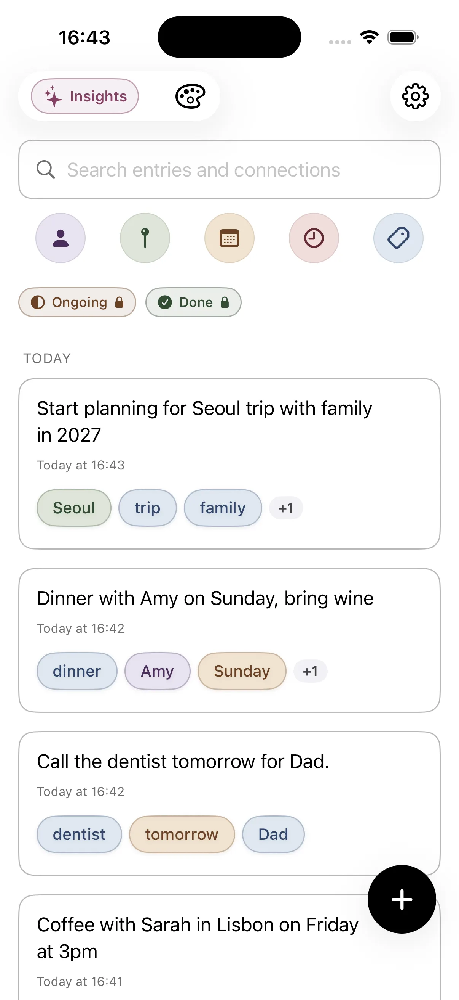
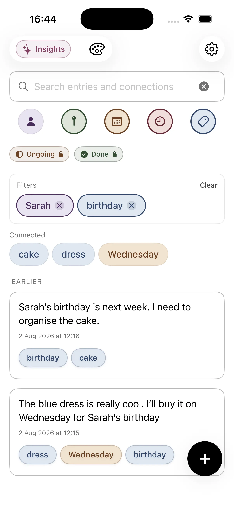
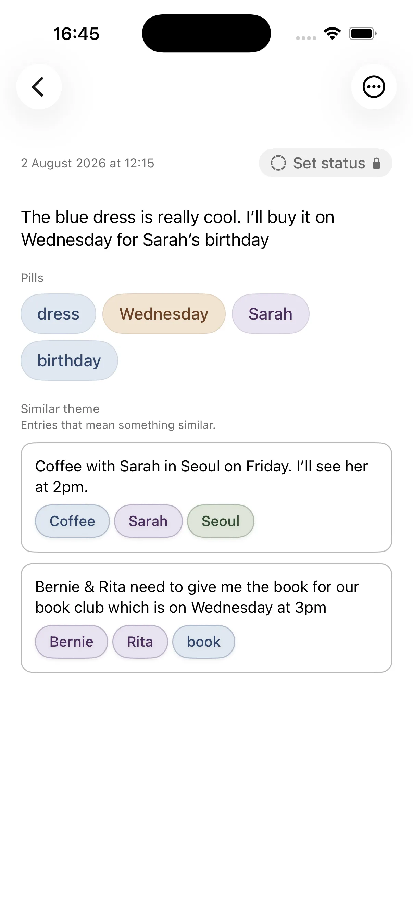
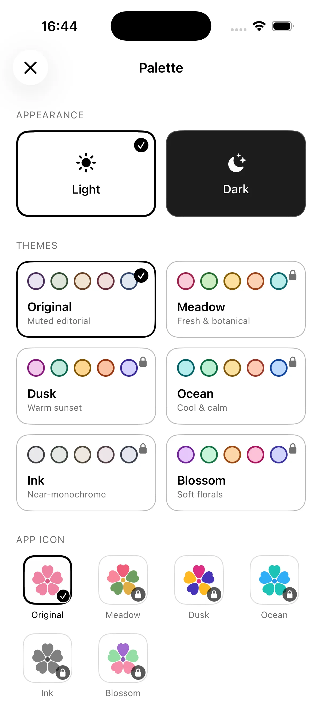
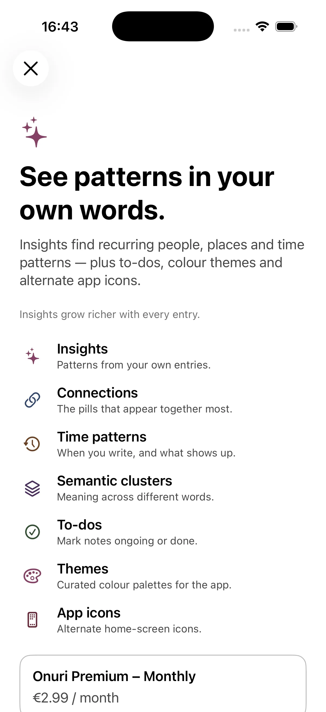

No folders to choose
Open the app and write. There is no notebook to pick and no tags to remember. Onuri saves drafts as you go.
Also from the maker of Stillkeep
Stillkeep keeps the moments you photograph. Onuri: Notes & Life Tracker keeps everything you write down: ideas, plans, people, conversations and the small details you want to remember. It is a free, private notes app for iPhone that connects the people, places, dates, times and topics in your writing automatically, so you never have to file anything.
Why two apps
Stillkeep started from one observation: a photo shows what happened, but the story of why it mattered fades unless you keep it with the picture. That works beautifully for trips, milestones and chapters of life, and those are visual by nature.
Much of what is worth remembering has no photo at all. A friend's new job, the name of a restaurant someone recommended, a half-formed idea, the date you last serviced the car, what the doctor said. Those things belong in notes, and ordinary notes apps tend to bury them in folders you stop checking.
Onuri was built for that side of life. You write naturally and Onuri recognises the context inside your words, on your device, then links each note to every other note that mentions the same person, place, date or topic. Weeks later, tapping a name brings back everything you ever wrote about them.
What Onuri does
Onuri shares Stillkeep's principles: calm, private, no feed and no filing chores.
Open the app and write. There is no notebook to pick and no tags to remember. Onuri saves drafts as you go.
Onuri recognises context on the device and links related notes for you. You never have to add a wiki-style link by hand.
Full-text search plus filters for people, places, dates, times and topics. Related entries surface notes with similar meaning even when the wording differs.
Over time your notes become a quiet record of who you see, where you go and what you think about. Premium Insights show recurring people, places, time patterns and themes.
Like Stillkeep, Onuri has no ads, no third-party analytics SDKs and no cross-app tracking. Notes sync only through your own iCloud account.
The free version includes unlimited notes and the core connection features, with TXT and CSV export so your writing stays portable.
Inside Onuri





Stillkeep or Onuri?
Many people use both: Stillkeep for the photos worth keeping, Onuri for the thoughts in between.
A trip, a wedding, a baby's first year, a weekend hike. Keep the pictures with the story, grouped into an Era, and export it later as a PDF photobook.
Ideas, meeting notes, plans, book quotes, what a friend told you over coffee. Onuri connects it all by person, place, date and topic. See its guide to a second brain on iPhone.
Birthdays, kids' names, the thing they were worried about last time. Onuri works as a lightweight personal CRM without the spreadsheet feeling.
Habits, symptoms, workouts, small wins. Short notes add up to a private life tracker that you can filter by date and topic.
Onuri at a glance
A private notes, second-brain and life-tracking app for iPhone.
Available on the Apple App Store in the Productivity category, with a free tier and optional Onuri Premium.
Built in Dublin, Ireland by John-Henry Roche, the developer of Stillkeep.
The app and onuri.app are available in all three languages.
Explore onuri.app
Everything on the Onuri website, grouped by what you want to know. You can also browse all Onuri resources or the full site contents.
A visual walkthrough: write a normal note, watch Onuri detect people, places and dates, then follow the connections.
The story behind the app, why it is folderless and who builds it.
Home-screen filters, related entries, dark mode, themes and Insights.
Quick capture that you can actually find again later.
The complete guide to organising notes without folders and building a personal second brain.
Cornell, Zettelkasten, PARA, bullet journal and more, with a quiz to find yours.
Twenty things worth writing down about people, places, dates and topics, with example notes.
Practical things to track in a private notes app, from health to habits to people.
What the free version includes: unlimited notes and automatic connections.
On-device recognition, private iCloud sync and Data Not Collected.
How connected notes differ from folders and how to switch.
Turn short everyday notes into a private life log you can filter by date and topic.
Use Onuri as a lightweight personal CRM for friends, family and contacts.
A low-maintenance PKM app for ideas, reading and research.
Quick answers
Yes. Both apps are designed and built by John-Henry Roche in Ireland, with the same privacy approach.
Yes. Onuri is free to download with unlimited notes. Onuri Premium is an optional subscription that adds Insights, to-dos with Ongoing and Done, colour themes and alternate app icons, from €2.99 a month.
No. They are separate apps and each keeps its data on your device and in your own private iCloud account. Neither app collects your data.
For personal notes, many people use it that way. Onuri's comparison page explains the differences: Apple Notes alternative.
Try it
Onuri is free on the App Store for iPhone. If you like how Stillkeep keeps your photos, you will feel at home with how Onuri keeps your notes.